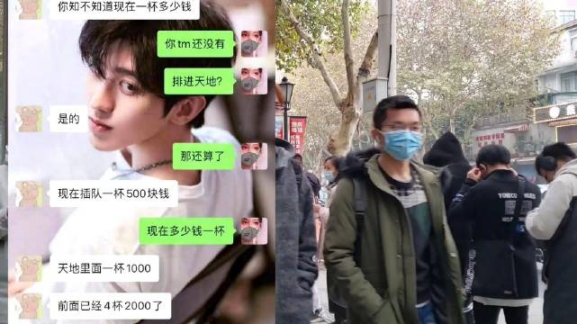

有时候觉得儿子真的挺幸运的。失败的时候我会鼓励他安慰他，跟他讲运气以及努力程度的问题，听他诉说痛苦，帮他化解。胜利的时候我会跟他一起庆祝，启发他努力的重要性：跟胜利的喜悦比，努力时候的辛苦不值一提。在我小时候，失败和胜利的时候，家长是不会询问以及跟我分享胜利分担痛苦的。甚至在胜利的时候经常会泼冷水……希望儿子成为一个遇到失败不气馁，越挫越勇的人。也希望他能够在一生中经常品尝胜利的滋味，不虚度一生。
医药上次的网格买入点这次指导意义不强。有两种情况。第一是由于支撑点上移，到达难度比上次大。也就是说，有可能跌不到上次买入的位置。第二，如果真的到了，那么跌破的可能性较大。而且，会大概率继续下跌。也就是说，如果跌到了，那么大概率不会像上次一样撑住。当然，撑不住是好事，就有机会继续第二网买入，未来也就会赚更多。我就是在这里提前打个心态疫苗。真发生了不要乱。
回复@微笑-开心果-:月收入/720，得出你的一小时大概值多少钱。然后看看浪费一小时在这个事情上值不值。当然，只是一个非常不精确的算法，但这个思路值得深入思考一下。//@微笑-开心果-:是免费的吗。。。免费我觉得也不值得排这么久的队啊。。。@辣姐在武汉:#武汉一杯奶茶卖到500元#今天茶颜悦色武汉天地店开业咩，辣姐去的时候已经要排8个小时了，外卖小哥说早上有人100下单，“插队”一杯卖到500，太疯狂了 #武汉史上最短营业时间奶茶店# 武汉 辣姐在武汉的微博视频  244万次播放 01:07
我是真的真的不理解啊。我这里有没有朋友愿意排几个小时队买奶茶的，请告诉我你到底是怎么想的！别人不许嘲笑他，否则我会拉黑！@辣姐在武汉:#武汉一杯奶茶卖到500元#今天茶颜悦色武汉天地店开业咩，辣姐去的时候已经要排8个小时了，外卖小哥说早上有人100下单，“插队”一杯卖到500，太疯狂了 #武汉史上最短营业时间奶茶店# 武汉 辣姐在武汉的微博视频 244万次播放 01:07
昨天儿子学校足球比赛中场断球后连过三人（包括门将），打入制胜一球，带领班级晋级下一轮。 我又开始考虑签了职业梯队文化课跟不上怎么办的事情了。发愁。@ETF拯救世界:这么说吧。去年给儿子报足球班的时候，我想的是会不会有机会入选国安梯队、进入国少、国青，十年后入选国家队参加世界杯。甚至担忧过签了俱乐部的职业合同后文化课差太多怎么办。一年后的今天，我觉得踢踢球锻炼锻炼身体也特别好。